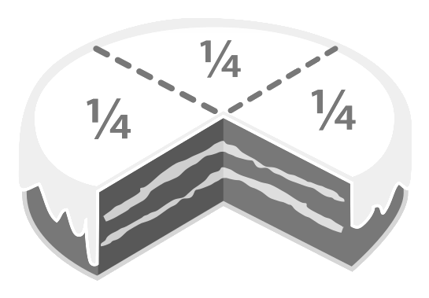
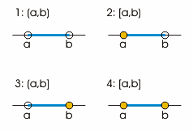
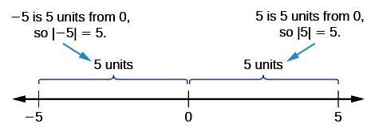
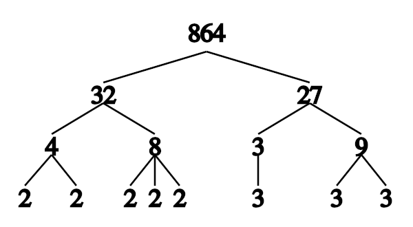

The basic arithmetic operations for real numbers are addition, subtraction, multiplication, and division.
Calculate the sum, difference, product, and quotient of positive whole numbers
Addition is the most basic operation of arithmetic. In its simplest form, addition combines two quantities into a single quantity, or sum. For example, say you have a group of 2 boxes and another group of 3 boxes. If you combine both groups together, you now have one group of 5 boxes. To represent this idea in mathematical terms:
Subtraction is the opposite of addition. Instead of adding quantities together, we are removing one quantity from another to find the difference between the two. Continuing the previous example, say you start with a group of 5 boxes. If you then remove 3 boxes from that group, you are left with 2 boxes. In mathematical terms:
Multiplication also combines multiple quantities into a single quantity, called the product. In fact, multiplication can be thought of as a consolidation of many additions. Specifically, the product of $x$ and $y$ is the result of $x$ added together $y$ times. For example, one way of counting four groups of two boxes is to add the groups together:
However, another way to count the boxes is to multiply the quantities:
Note that both methods give you the same result—8—but in many cases, particularly when you have large quantities or many groups, multiplying can be much faster.
Division is the inverse of multiplication. Rather than multiplying quantities together to result in a larger value, you are splitting a quantity into a smaller value, called the quotient. Again, to return to the box example, splitting up a group of 8 boxes into 4 equal groups results in 4 groups of 2 boxes:
The commutative property describes equations in which the order of the numbers involved does not affect the result. Addition and multiplication are commutative operations:
Subtraction and division, however, are not commutative.
The associative property describes equations in which the grouping of the numbers involved does not affect the result. As with the commutative property, addition and multiplication are associative operations:
Once again, subtraction and division are not associative.
The distributive property can be used when the sum of two quantities is then multiplied by a third quantity.
Arithmetic operations can be performed on negative numbers according to specific rules.
Calculate the sum, difference, product, and quotient of negative whole numbers
The addition of two negative numbers is very similar to the addition of two positive numbers. For example:
The underlying principle is that two debts—negative numbers— can be combined into a single debt of greater magnitude.
When adding together a mixture of positive and negative numbers, another way to write the negative numbers is as positive quantities being subtracted. For example:
Here, a credit of 8 is combined with a debt of 3, which yields a total credit of 5. However, if the negative number has greater magnitude, then the result is negative:
Similarly:
Here, a debt of 2 is combined with a credit of 7. The credit has greater magnitude than the debt, so the result is positive. But if the credit is less than the debt, the result is negative:
$2 + (-7) = 2 - 7 = -5$
Subtracting positive numbers from each other can yield a negative answer. For example, subtracting 8 from 5:
Subtracting a positive number is generally the same as adding the negative of that number. That is to say:
and
Similarly, subtracting a negative number yields the same result as adding the positive of that number. The idea here is that losing a debt is the same thing as gaining a credit. Therefore:
and
When multiplying positive and negative numbers, the sign of the product is determined by the following rules:
For example:
This is simply because adding −2 together three times yields −6:
However,
The idea again here is that losing a debt is the same thing as gaining a credit. In this case, losing two debts of three each is the same as gaining a credit of six:
$\left (-2\text{ debts } \right ) \times \left ( -3 \text{ each} \right ) = +6\text{ credit}$
The sign rules for division are the same as for multiplication.
If the dividend and the divisor have the same sign, that is to say, the result is always positive. For example:
and
but
$(-8) (-2) = 4$ .
The basic properties of addition (commutative, associative, and distributive) also apply to negative numbers. For example, the following equation demonstrates the distributive property:
A fraction represents a part of a whole and consists of an integer numerator and a non-zero integer denominator.
Calculate the result of operations on fractions
A fraction represents a part of a whole. A common fraction, such as $\frac{1}{2}$ , $ \frac{8}{5}$ , or $\frac{3}{4}$ , consists of an integer numerator (the top number) and a non-zero integer denominator (the bottom number). The numerator represents a certain number of equal parts of the whole, and the denominator indicates how many of those parts are needed to make up one whole. An example can be seen in the following figure, in which a cake is divided into quarters:
A cake with one-fourth removed. The remaining three-fourths are shown. Dotted lines indicate where the cake can be cut to divide it into equal parts. Each remaining fourth of the cake is denoted by the fraction $\frac{1}{4}$ .
The first rule of adding fractions is to start by adding fractions that contain like denominators—for example, multiple fourths, or quarters. A quarter is represented by the fraction $\frac{1}{4}$ , where the numerator, 1, represents the single quarter and the denominator, 4, represents the number of quarters it takes to make a whole, or one dollar.
Imagine one pocket containing two quarters, and another pocket containing three quarters. In total, there are five quarters. Since four quarters is equivalent to one (dollar), this can be represented as follows:
To add fractions that contain unlike denominators (e.g. quarters and thirds), it is necessary to first convert all amounts to like quantities, which means all the fractions must have a common denominator. One easy way to to find a denominator that will give you like quantities is simply to multiply together the two denominators of the fractions. (It is important to remember that each numerator must also be multiplied by the same value its denominator is being multiplied by in order for the fraction to represent the same ratio.)
For example, to add quarters to thirds, both types of fractions are converted to twelfths:
This method can be expressed algebraically as follows:
This method always works. However, sometimes there is a faster way—a smaller denominator, or a least common denominator—that can be used. For example, to add $\frac{3}{4}$ to $\frac{5}{12}$ , the denominator 48 (the product of 4 and 12, the two denominators) can be used—but the smaller denominator 12 (the least common multiple of 4 and 12) may also be used.
What if a fraction is being added to a whole number? Simply start by writing the whole number as a fraction (recall that a whole number has a denominator of $1$ ), and then continue with the above process for adding fractions.
The process for subtracting fractions is, in essence, the same as that for adding them. Find a common denominator, and change each fraction to an equivalent fraction using that common denominator. Then, subtract the numerators. For instance:
To subtract a fraction from a whole number or to subtract a whole number from a fraction, rewrite the whole number as a fraction and then follow the above process for subtracting fractions.
Unlike with addition and subtraction, with multiplication the denominators are not required to be the same. To multiply fractions, simply multiply the numerators by each other and the denominators by each other. For example:
If any numerator and denominator shares a common factor, the fractions can be reduced to lowest terms before or after multiplying. For example, the resulting fraction from above can be reduced to $\frac{1}{2}$ because the numerator and denominator share a factor of 6. Alternatively, the fractions in the initial equation could have been reduced, as shown below, because 2 and 4 share a common factor of 2 and 3 and 3 share a common factor of 3:
To multiply a fraction by a whole number, simply multiply that number by the numerator of the fraction:
A common situation where multiplying fractions comes in handy is during cooking. What if someone wanted to "half" a cookie recipe that called for $\frac {1}{2}$ of a cup of chocolate chips? To find the proper amount of chocolate chips to use, multiply $\frac {1}{2} \cdot \frac{1}{2}$ . The result is $\frac {1}{4}$ , so the proper amount of chocolate chips is $\frac {1}{4}$ of a cup.
The process for dividing a number by a fraction entails multiplying the number by the fraction's reciprocal. The reciprocal is simply the fraction turned upside down such that the numerator and denominator switch places. For example:
To divide a fraction by a whole number, either divide the fraction's numerator by the whole number (if it divides simply):
or multiply the fraction's denominator by the whole number:
A complex fraction is one in which the numerator, denominator, or both are fractions, which can contain variables, constants, or both.
Simplify complex fractions
A complex fraction, also called a complex rational expression, is one in which the numerator, denominator, or both are fractions. For example, $\frac {\left( \frac {8}{15}\right) }{\left( \frac {2}{3}\right)}$ and $\frac {3}{1-\frac{2}{5}}$ are complex fractions. When dealing with equations that involve complex fractions, it is useful to simplify the complex fraction before solving the equation.
The process of simplifying complex fractions, known as the "combine-divide method," is as follows:
Let's apply this method to the first complex fraction presented above:
Since there are no terms that can be combined or simplified in either the numerator or denominator, we'll skip to Step 3, dividing the numerator by the denominator:
From previous sections, we know that dividing by a fraction is the same as multiplying by the reciprocal of that fraction. Therefore, we use the cancellation method to simplify the numbers as much as possible, and then we multiply by the simplified reciprocal of the divisor, or denominator, fraction:
Therefore, the complex fraction $\frac {\left( \frac {8}{15}\right) }{\left( \frac {2}{3}\right)}$ simplifies to $\frac {4}{5}$ .
Let's try another example:
Start with Step 1 of the combine-divide method above: combine the terms in the numerator. You'll find that the common denominator of the two fractions in the numerator is 6, and then you can add those two terms together to get a single fraction term in the larger fraction's numerator:
$\displaystyle \frac {\left(\dfrac{1}{2}+\dfrac{2}{3}\right)}{\left(\dfrac{2}{3}\cdot\dfrac{3}{4}\right)} = \dfrac {\left(\dfrac{3}{6}+\dfrac{4}{6}\right)}{\left(\dfrac{2}{3}\cdot\dfrac{3}{4}\right)} = \dfrac {\left(\dfrac{7}{6}\right)}{\left(\dfrac{2}{3}\cdot\dfrac{3}{4}\right)}$
Let's move on to Step 2: combine the terms in the denominator. To do so, we multiply the fractions in the denominator together and simplify the result by reducing it to lowest terms:
Let's turn to Step 3: divide the numerator by the denominator. Recall, again, that dividing by a fraction is the same as multiplying by the reciprocal of that fraction:
Finally, simplify the resultant fraction:
Therefore, ultimately:
Exponential form, written $b^n$ , represents multiplying the base $b$ times itself $n$ times.
Describe exponents as representing repeated multiplication
Exponentiation is a mathematical operation that represents repeated multiplication. The exponent $n$ in the expression $b^n$ represents the number of times the base $b$ is multiplied by itself.
For example, the expression $b^3$ represents $b \cdot b \cdot b$ . Here, the exponent is 3, and the expression can be read in any of the following ways:
Some exponents have their own unique pronunciations. For example, $b^2$ is usually read as "$b$ squared" and $b^3$ as "$b$ cubed."
Exponentiation is used frequently in many fields, including economics, biology, chemistry, physics, and computer science, with applications such as compound interest, population growth, chemical reaction kinetics, wave behavior, and public key cryptography.
Now that we understand the basic idea, let's practice simplifying some exponential expressions.
Let's look at an exponential expression with 2 as the base and 3 as the exponent:
This means that the base 2 gets multiplied by itself 3 times:
Let's look at another exponential expression, this time with 3 as the base and 5 as the exponent:
This means that the base 3 gets multiplied by itself 5 times:
Any number raised by the exponent $1$ is the number itself. That is to say, $b^1=b$ .
Any nonzero number raised by the exponent 0 is 1. That is to say, $b^0=1$ . For example, $4^0=1$ .
The order of operations is an approach to evaluating expressions that involve multiple arithmetic operations.
Differentiate between correct and incorrect uses of the order of operations
The order of operations is a way of evaluating expressions that involve more than one arithmetic operation. These rules tell you how you should simplify or solve an expression or equation in the way that yields the correct output.
For example, when faced with the expression $4+2\cdot 3$ , how do you proceed?
One option is:
The other option is:
Which one is the correct order of operations?
In order to be able to communicate using mathematical expressions, we must have an agreed-upon order of operations so that each expression is unambiguous. For the above expression, for example, all mathematicians would agree that the correct answer is 10.
The order of operations used throughout mathematics, science, technology, and many computer programming languages is as follows:
These rules means that within a mathematical expression, the operation ranking highest on the list should be performed first. Multiplication and division are of equal precedence (tier 3), as are addition and subtraction (tier 4). This means that multiplication and division operations (and similarly addition and subtraction operations) can be performed in the order in which they appear in the expression.
Let's evaluate a few expressions using the order of operations.
In this expression, the following operations are taking place: exponentiation, subtraction, multiplication, and addition. Following the order of operations, we simplify the exponent first and then perform the multiplication; next, we perform the subtraction, and then the addition:
Here we have an expression that involves subtraction, parentheses, multiplication, addition, and exponentiation. Following the order of operations, we simplify the expression within the parentheses first and then simplify the exponent; next, we perform the subtraction and addition operations in the order in which they appear in the expression:
Since multiplication and division are of equal precedence, it may be helpful to think of dividing by a number as multiplying by the reciprocal of that number. Thus $3 \div 4 = 3 \cdot \frac{1}{4}$ . In other words, the quotient of 3 and 4 equals the product of 3 and $\frac{1}{4}$ .
Similarly, as addition and subtraction are of equal precedence, we can think of subtracting a number as the same as adding the negative of that number. Thus $3-4=3+(-4)$ . In other words, the difference of 3 and 4 equals the sum of positive three and negative four.
With this understanding, think of $1-3+7$ as the sum of 1, negative 3, and 7, and then add these terms together. Now that you've reframed the operations, any order will work:
The important thing is to keep the negative sign with any negative number (here, the 3).
In the United States, the acronym PEMDAS is a common mnemonic for remembering the order of operations. It stands for Parentheses, Exponents, Multiplication, Division, Addition, and Subtraction. PEMDAS is often expanded to "Please Excuse My Dear Aunt Sally."
This mnemonic can be misleading, however, because the "MD" implies that multiplication must be performed before division and the "AS" that addition must be performed before subtraction, rather than acknowledging their equal precedence. To illustrate why this is a problem, consider the following:
This expression correctly simplifies to 9. However, if you were to add together 2 and 3 first, to give 5, and then performed the subtraction, you would get 5 as your final answer, which is incorrect. To avoid this mistake, is best to think of this problem as the sum of positive ten, negative three, and positive two.
To avoid this confusion altogether, an alternative way to write the mnemonic is:
P
E
MD
AS
Or, simply as PEMA, where it is taught that multiplication and division inherently share the same precedence and that addition and subtraction inherently share the same precedence. This mnemonic makes the equivalence of multiplication and division and of addition and subtraction clear.
Interval notation uses parentheses and brackets to describe sets of real numbers and their endpoints.
Use interval notation to represent sets of numbers
A "real interval" is a set of real numbers such that any number that lies between two numbers in the set is also included in the set. For example, the set of all numbers $x$ satisfying $0 \leq x \leq 1$ is an interval that contains 0 and 1, as well as all the numbers between them. Other examples of intervals include the set of all real numbers and the set of all negative real numbers.
The interval of numbers between $a$ and $b$ , including $a$ and $b$ , is often denoted $[a,b]$ . The two numbers are called the endpoints of the interval.
An open interval does not include its endpoints and is indicated with parentheses. For example, $(0,1)$ describes an interval greater than 0 and less than 1.
A closed interval includes its endpoints and is denoted with square brackets rather than parentheses. For example, $[0,1]$ describes an interval greater than or equal to 0 and less than or equal to 1.
To indicate that only one endpoint of an interval is included in that set, both symbols will be used. For example, the interval of numbers between 1 and 5, including 1 but excluding 5, is written as $[1,5)$ .
The image below illustrates open and closed intervals on a number line.
Representations of open and closed intervals on the real number line.
An interval is said to be bounded if both of its endpoints are real numbers. Bounded intervals are also commonly known as finite intervals. Conversely, if neither endpoint is a real number, the interval is said to be unbounded. For example, the interval $(1,10)$ is considered bounded; the interval $(- \infty, + \infty)$ is considered unbounded.
The set of all real numbers is the only interval that is unbounded at both ends; the empty set (the set containing no elements) is bounded.
An interval that has only one real-number endpoint is said to be half-bounded, or more descriptively, left-bounded or right-bounded. For example, the interval $(1, + \infty)$ is half-bounded; specifically, it is left-bounded.
Absolute value can be thought of as the distance of a real number from zero.
Define the absolute value of a number
In mathematics, the absolute value (sometimes called the modulus) of a real number $a$ is denoted $\left | a \right |$ . It refers to the distance of $a$ from zero. Therefore, $\left | a \right |>0$ for all numbers. For example, the absolute value of 5 is 5, and the absolute value of −5 is also 5, because both numbers are the same distance from 0.
The absolute values of 5 and -5 shown on a number line.
When applied to the difference between real numbers, the absolute value represents the distance between the numbers on a number line.
Absolute value is closely related to the mathematical and physical concepts of magnitude, distance, and norm. The term "absolute value" has been used in this sense since at least 1806 in French and 1857 in English. The notation $\left | a \right |$ was introduced by Karl Weierstrass in 1841. Other names for absolute value include "numerical value," "modulus," and "magnitude."
The following are some examples of equations involving absolute value:
A set is a collection of unique numbers, often denoted with curly brackets: {}.
Use set notation to represent sets of numbers and describe the properties of commonly used sets of numbers
Sets are one of the most fundamental concepts in mathematics. A set is a collection of distinct objects and is considered an object in its own right. For example, the numbers 2, 4, and 6 are distinct objects when considered separately, but when they are considered together they form a single set of size three, written $\left \{ 2,4,6 \right \}$ .
There are two ways of describing, or specifying the members of, a set. One way is through intentional definition, using a rule or semantic description. For example: "$A$ is the set whose members are the first four positive integers."
The second way of describing a set is through extension: listing each member of the set. An extensional definition is denoted by enclosing the list of members in curly brackets: $C = \left \{ 4, 2, 1, 3 \right \}$ .
Every element of a set must be unique; no two members may be identical. All set operations preserve this property. The order in which the elements of a set are listed is irrelevant (unlike for a sequence). Therefore:
because the extensional specification means merely that each of the elements listed is a member of the set.
For sets with many elements, the enumeration of members can be abbreviated. For instance, the set of the first thousand positive integers may be specified extensionally as:
where the ellipsis ($\cdots$ ) indicates that the list continues in the obvious way. Ellipses may also be used where sets have infinitely many members. Thus the set of positive even numbers can be written as $\left \{ 2,4,6,8, \cdots \right \}$ .
A subset is a set whose every element is also contained in another set. For example, if every member of set $A$ is also a member of set $B$ , then $A$ is said to be a subset of $B$ . This is written $A \subseteq B$ (also pronounced "$A$ is contained in $B$ "). Equivalently, we can say that $B$ is a superset of $A$ , which means that $B$ includes $A$ , or $B$ contains $A$ . This is written $B \supseteq A$ .
For example, $\left \{ 1,3 \right \} \subseteq \left \{ 1,2,3,4 \right \}$ .
Some of the most commonly referenced sets of numbers are as follows.
The set of natural numbers, also known as "counting numbers," includes all whole numbers starting at 1 and then increasing. The set of natural numbers is represented by the symbol $\mathbb{N}$ and can be denoted as $\mathbb{N}=\left \{ 1,2,3,4, \cdots \right \}$ .
The set of real numbers includes every number, negative and decimal included, that exists on the number line. The set of real numbers is represented by the symbol $\mathbb{R}$ .
The set of integers includes all whole numbers (positive and negative), including $0$ . The set of integers is represented by the symbol $\mathbb{Z}$ . (This may seem odd, but it stands for the German term "Zahlen," which means "numbers.")
The set of rational numbers, denoted by the symbol $\mathbb{Q}$ , includes any number that is written as a fraction. The symbol $\mathbb{Q}$ is used because Q represents the word "quotient".
The set of imaginary numbers, denoted by the symbol $\mathbb{I}$ , includes all numbers that result in a negative number when squared.
The set of complex numbers, denoted by the symbol $\mathbb{C}$ , includes a combination of real and imaginary numbers in the form of $a+bi$ where $a$ and $b$ are real numbers and $i$ is an imaginary number.
Any whole number greater than one can be factored, which means it can be broken down into smaller integers.
Calculate numbers' factors and prime factors
In mathematics, factorization (or factoring) is the process of breaking an object (such as a number or algebraic expression) down into a product of other objects, or factors, which when multiplied together give the original number or expression. The aim of factoring is to reduce something to "basic building blocks." This process has many real-life applications and can help us solve problems in mathematics.
In particular, factoring a number means to break it down into numbers that when multiplied back together produce the given number. For now, we will focus on factoring whole numbers.
For example, consider the number 24. To find the factors, consider the numbers that yield a product of 24. We know that $6 \times 4 = 24$ , so both 6 and 4 are factors of 24. If we think about it, we can list all of the numbers that 24 is divisible by: 1, 2, 3, 4, 6, 8, 12, and 24. This is a complete list of the factors of 24.
Prime factorization is a particular type of factorization that breaks a number of interest into prime numbers that when multiplied back together produce the original number. Such prime numbers are called prime factors.
For example, consider the number 6. We know that $2 \times 3 = 6$ , so 2 and 3 are both factors of 6. Also note that 2 and 3 are prime numbers, because each is divisible by only 1 and itself. Therefore, 2 and 3 are prime factors of 6.
Now, consider the number 12. We know that $2 \times 6 = 12$ , so 2 and 6 are both factors of 12. However, 6 is not a prime factor. In this case, we must reduce 6 to its prime factors as well. Since we know from the previous example that the prime factors of 6 are 2 and 3 (because $2 \times 3 = 6$ ), we can easily recognize that $2 \times 2 \times 3 = 12$ . We have now found factors for 12 that are all prime numbers. Therefore, the prime factorization for 12 is $2 \times 2 \times 3$ .
Every positive integer greater than 1 has a distinct prime factorization. To factor larger numbers, it can be helpful to draw a factor tree.
In a factor tree, the number of interest is written at the top. Then, two factors of that number are found and connected below that number with branches. This process repeats for each subsequent factor of the original number until all the factors at the bottoms of the branches are prime.
This factor tree shows the factorization of 864. It shows that 864 is the product of five 2s and three 3s. A shorthand way of writing these resulting prime factors is $2^5 \times 3^3$ .
Percentages are used to express how large or small one quantity is relative to another quantity.
Use percents to solve real-world problems
In mathematics, a percentage is a number or ratio as a fraction of 100. It is often denoted using the percent sign or the abbreviation "pct." For example, 45% (read as "forty-five percent") is equal to 45/100, or 0.45.
Percentages are used to express how large or small one quantity is relative to another quantity. For example, an increase of \$0.15 on a price of \$2.50 is an increase by a fraction of 0.15/2.50 = 0.06. 0.06 is read as "6 hundredths"; therefore, you know it is 6 parts out of a hundred parts. Expressed as a percentage, this is a 6% increase.
To calculate a percentage, you turn the numbers into a ratio as a fraction of 100. For example, if someone says that 8 out of 15 students are boys, you can calculate the percentage of students who are boys as follows:
Therefore, 53% of the students are boys.
To calculate a percentage of another percentage, you convert both percentages to decimals and multiply them, at which point you can translate the decimal result back to a fraction and then a percentage. For example, 50% of 40% is:
Mixture problems may involve combining two or more substances or objects and require you to find the percent of one of those substances out of the entire mixture. The percent value is computed by multiplying the numeric value of the ratio by 100.
For example, to find the percentage of 50 green apples out of 1,250 red and green apples in a barrel, first compute the ratio:
$\dfrac{50}{1250} = .04$
and then multiply by 100:
$.04 \times 100 = 4\%$
Therefore, 4% of the apples in the barrel are green.
Whenever we talk about a percentage, it is important to specify what the percentage is relative to. When speaking of a "10% rise" or a "10% fall" in a quantity, for example, the usual interpretation is that this is relative to the initial value of that quantity. For example, if an item is initially priced at \$200 and the price rises 10% (an increase of \$20), the new price will be \$220. Note that this final price is actually 110% of the initial price (100% + 10% = 110%)—hence the potential confusion.
The following problem illustrates this point more fully.
In a certain college, 60% of all students are female, and 10% of all students are computer science majors. If 5% of female students are computer science majors, what percentage of computer science majors are female? Here, we have been asked to compute the ratio of female computer science majors to all computer science majors. We know that 60% of all students are female, and among these 5% are computer science majors, so we conclude that:
$\dfrac{60}{100} \times \dfrac{5}{100} = \dfrac{3}{100} = 3 \%$
Therefore, 3% of all students are female computer science majors. We now need to divide by the proportion of all students that are computer science majors, which we have been told is 10%:
Therefore, 30% of all computer science majors at this school are female.
Although percentages are usually used to express numbers between zero and one, any ratio can be expressed as a percentage. For instance, 1.11 can also be written as 111%, and -0.0035 can also be written as -0.35%.
A percentage greater than 100 can represent growth, as in product sales increasing by 110%. Conversely, a negative percent value can represent a decrease in a value, as in a -5% change in sales, which would indicate a 5% drop.
The arithmetic mean, or average, of a set of numbers indicates the "middle" or "typical" value of a data set.
Calculate the average of a set of numbers in a real-world context
The arithmetic mean, or "average" is a measure of the "middle" or "typical" value of a data set. It is the sum of a collection of numbers divided by the number of numbers in that collection. While it is often referred to simply as "mean" or "average," the term "arithmetic mean" is preferred in some contexts because it helps distinguish it from other means, such as the geometric mean and the harmonic mean.
The arithmetic mean is used frequently not only in mathematics and statistics but also in fields such as economics, sociology, and history. For example, per capita income is the arithmetic mean income of a nation's population.
Suppose we have a data set containing the values $a_1, \dots, a_n$ . The arithmetic mean $A$ is defined via the expression:
This is simply a mathematical way of writing "the mean equals the sum of all of the values in the set, divided by the number of values in the set."
To see how this applies to an actual set of numbers, consider the following set: $\{3,5,10\}$ .
In order to find the average, we must first find the sum of the numbers:
Next, divide their sum by 3, the number of values in the set:
Therefore, the average of the set of numbers $\{3,5,10\}$ is 5.
Find the average of the following set of numbers: $\{12, 25, 34, 17, 8, 42\}$
We need to add the values together and then divide that sum by the total number of values, which is 6.
The average of this set is 23.
Consider the following real-life situation. A small company has 8 employees. Two of those employees are paid \$35 per hour, two of them are paid \$27 per hour, and four are paid \$25 per hour. What is the average hourly wage of these 8 employees?
We need to add together each of the hourly salaries and then divide by 8, the number of employees:
Therefore, employees of this company are paid an average hourly wage of \$28.
Radical expressions yield roots and are the inverse of exponential expressions.
Describe the root of a number in terms of exponentiation
Roots are the inverse operation of exponentiation. Mathematical expressions with roots are called radical expressions and can be easily recognized because they contain a radical symbol ($\sqrt{}$ ).
Recall that exponents signify that we should multiply a given integer a certain number of times. For example, $7^2$ tells us that we should multiply 7 by itself two times:
Since roots are the inverse operation of exponentiation, they allow us to work backwards from the solution of an exponential expression to the number in the base of the expression.
For example, the following is a radical expression that reverses the above solution, working backwards from 49 to its square root:
In this expression, the symbol is known as the "radical," and the solution of 7 is called the "root."
Finding the value for a particular root can be much more difficult than solving an exponential expression. For now, it is important simplify to recognize the relationship between roots and exponents: if a root $r$ is defined as the $n \text{th}$ root of $x$ , it is represented as
Because roots are the inverse of exponents, we can cancel out the root in this equation by raising the answer to the nth power:
To simplify:
If the square root of a number $x$ is calculated, the result is a number that when squared (i.e., when raised to an exponent of 2) gives the original number $x$ . This can be written symbolically as follows: $\sqrt x = y$ if ${y}^{2}=x$ . This rule applies to the series of real numbers ${ y }^{ 2 }\ge 0$ , regardless of the value of $y$ . As such, when $x<0$ then $\sqrt x$ cannot be defined.
For example, consider the following: $\sqrt{36}$ . This is read as "the square root of 36" or "radical 36." You may recognize that $6^2 = 6 \cdot 6 = 36$ , and therefore conclude that 6 is the root of $\sqrt{36}$ . Thus we have the answer, $\sqrt{36} = 6$ .
The cube root of a number ($\sqrt [ 3 ]{x}$ ) can also be calculated. The cube root of a value $x$ is the number that when cubed (i.e., when raised to an exponent of 3) yields the original number $x$ .
For example, the cube root of 8 is 2 because $2^3 = 2 \cdot 2\cdot 2=8$ . This can also be written as $\sqrt[3]{8}=2$ .
There are an infinite number of possible roots all in the form of $\sqrt [n]{a}$ . Any non-zero integer can be substituted for $n$ . For example, $\sqrt[4]{a}$ is called the "fourth root of $a$ ," and $\sqrt[20]{a}$ is called the "twentieth root of $a$ ."
Note that for any such root, if $\sqrt [n]{a} = b$ then ${b}^{n} = a$ . As an example, consider $\sqrt[4]{2401} = 7$ . $7^4 = 7\cdot 7\cdot 7\cdot 7 = 2401$ .
Radicals and exponents have particular requirements for addition and subtraction while multiplication is carried out more freely.
Differentiate between correct and incorrect uses of operations on radical expressions
Roots are the inverse operation for exponents. An expression with roots is called a radical expression. It's easy, although perhaps tedious, to compute exponents given a root. For instance $7\cdot7\cdot7\cdot7 = 49\cdot49 = 2401$ . So, we know the fourth root of 2401 is 7, and the square root of 2401 is 49. What is the third root of 2401? Finding the value for a particular root is difficult. This is because exponentiation is a different kind of function than addition, subtraction, multiplication, and division.
Let's go through some basic mathematical operations with radicals and exponents.
To add radicals, the radicand (the number that is under the radical) must be the same for each radical, so, a generic equation will have the form:
Let's plug some numbers in place of the variables:
Subtraction follows the same rules as addition:
For example:
Multiplication of radicals simply requires that we multiply the variable under the radical signs.
Some examples with real numbers:
This equation can actually be simplified further; we will go over simplification in another section.
A radical expression can be simplified if:
For example, the radical expression $\displaystyle \sqrt{\frac{16}{3}}$ can be simplified by first removing the squared value from the numerator.
Then, the fraction under the radical sign can be addressed, and the radical in the numerator can again be simplified.
Finally, the radical needs to be removed from the denominator.
Root rationalization is a process by which any roots in the denominator of an irrational fraction are eliminated.
Convert between fractions with and without rationalized denominators
In mathematics, we are often given terms in the form of fractions with radicals in the numerator and/or denominator. When we are given expressions that involve radicals in the denominator, it makes it easier to evaluate the expression if we rewrite it in a way that the radical is no longer in the denominator. This process is called rationalizing the denominator.
Before we begin, remember that whatever we do to one side of an algebraic equation, we must also do to the other side. This same principle can be applied to fractions: whatever we do to the numerator, we must also do to the denominator, and vice versa.
Let's look at an example to illustrate the process of rationalizing the denominator.
You are given the fraction $\frac{10}{\sqrt{3}}$ , and you want to simplify it by eliminating the radical from the denominator. Recall that a radical multiplied by itself equals its radicand, or the value under the radical sign. Therefore, multiply the top and bottom of the fraction by $\frac{\sqrt{3}}{\sqrt{3}}$ , and watch how the radical expression disappears from the denominator:$\displaystyle \frac{10}{\sqrt{3}} \cdot \frac{\sqrt{3}}{\sqrt{3}} = {\frac{10\cdot\sqrt{3}}{{\sqrt{3}}^2}} = {\frac{10\sqrt{3}}{3}}$
There is no such value such that when squared it results in a negative value; we therefore classify roots of negative numbers as "imaginary."
Explain what imaginary numbers are and why they are needed in mathematics
A radical expression represents the root of a given quantity. What does it mean, then, if the value under the radical is negative, such as in $\displaystyle \sqrt{-1}$ ? There is no real value such that when multiplied by itself it results in a negative value. This means that there is no real value of $x$ that would make $x^2 =-1$ a true statement.
That is where imaginary numbers come in. When the radicand (the value under the radical sign) is negative, the root of that value is said to be an imaginary number. Specifically, the imaginary number, $i$ , is defined as the square root of -1: thus, $i=\sqrt{-1}$ .
We can write the square root of any negative number in terms of $i$ . Here are some examples:
There are rules for operating on numbers with exponents that make it easy to simplify and solve problems.
Explain and implement the rules for operating on numbers with exponents
There are several useful rules for operating on numbers with exponents. The following four rules, also known as "identities," hold for all integer exponents, provided that the base is non-zero.
$a^m$ means that you have $m$ factors of $a$ . If you multiply this quantity by $a^n$ , i.e. by $n$ additional factors of $a$ , then you have $a^{m+n}$ factors in total. For example:
Note that you can only add exponents in this way if the corresponding terms have the same base.
In the same way that ${ a }^{ m }\cdot { a }^{ n }={ a }^{ m+n }$ because you are adding on factors of $a$ , dividing removes factors of $a$ . If you have $n$ factors of $a$ in the denominator, then you can cross out $n$ factors from the numerator. If there were $m$ factors in the numerator, now you have $(m-n)$ factors in the numerator.
In order to visualize this process, consider the fraction:
This fraction can be rewritten as:
Here you can see that two 3s will cancel out from the numerator and denominator. We are left with:
As an additional example:
If you think about an exponent as telling you that you have a certain number of factors of the base, then ${({a}^{n})}^{m}$ means that you have factors $m$ of $a^n$ . Therefore, you have $m$ groups of $a^n$ , and each one of those has $n$ groups of $a$ . Therefore, you have $m$ groups of $n$ groups of $a$ ; therefore, you have $n \cdot m$ groups of $a$ , or ${a}^{n \cdot m}$ . For example:
You can multiply numbers in any order you please. Instead of multiplying together $n$ factors equal to $ab$ , you could multiply all of the $a$ s together and all of the $b$ s together and then finish by multiplying $a^n$ by $b^n$ . For example:
Simplify the following expression: $(3\cdot2)^3\cdot (2^5)^4$
For the first part of the expression, apply the rule for a product raised to an exponent:
For the last part of the expression, apply the rule for raising an exponential expression to an exponent:
Notice that two of the terms in this expression have the same base: 2. These two terms can be combined by applying the rule for multiplying exponential expressions with the same base:
Therefore, $3^3 \cdot 2^{23}$ is the simplified form of this expression.
Numbers with negative exponents are treated normally in arithmetic operations and can be rewritten as fractions.
Relate negative exponents to fractions and work with them accordingly
Solving mathematical problems involving negative exponents may seem daunting. However, negative exponents are treated much like positive exponents when applying the rules for operations. There is an additional rule that allows us to change the negative exponent to a positive one in the denominator of a fraction, and it holds true for any real numbers $n$ and $b$ , where $b \neq 0$ :
$b^{-n} = \dfrac{1}{b^n}$
For example:
$6^{-2} = \dfrac{1}{6^2} = \dfrac{1}{36}$
To understand how this rule is derived, consider the following fraction:
We can rewrite this as:
We then notice that three 7s cancel from both the numerator and denominator, and we are left with:
Note that if we apply the rule for division of numbers with exponents, we have:
Thus, we can identify that:
This rule makes it possible to simplify expressions with negative exponents.
Note that each of the rules for operations on numbers with exponents still apply when the exponent is a negative number. For example, consider the rule for multiplying two exponential expressions with the same base. The following is true:
Simplify the following expression: $(2^{-4})^2$ .
Note that the rule for raising an exponential expression to another exponent can be applied:
This can be simplified using the rule for negative exponents:
$2^{-8}=\dfrac{1}{2^8}$
Simplify the following expression: $(3^{-2} \cdot 3^4)^{-3}$ .
Recall that the rule for multiplying two exponential expressions with the same base can be applied. Therefore, we can simplify the expression inside the parentheses:
$3^{-2} \cdot 3^4 = 3^{-2+4} = 3^2$
Now place this value back into the parentheses, and apply the rule for raising an exponential expression to an exponent:
$(3^2)^{-3} = 3^{(2)(-3)} = 3^{-6} = \dfrac{1}{3^6}$
Rational exponents are another method for writing radicals and can be used to simplify expressions involving both exponents and roots.
Relate rational exponents to radicals and the rules for manipulating them
A rational exponent is a rational number that provides another method for writing roots. For example, an $n$ th root of a number $b$ is a number $x$ such that $x^n = b$ . If $b$ is a positive real number and $n$ is a positive integer, then there is exactly one positive real solution to $ x^n = b$ . This solution is called the $n$ th root of $b$ and is denoted $\sqrt[n]{b}$ or $b^\frac{1}{n}$ . For example: $\sqrt{4}=4^\frac{1}{2}=2$ .
There are also cases where the exponent is a fraction $\frac{m}{n}$ , where $m$ is an integer and $n$ is a positive integer. In such cases, the exponent acts as both a whole number exponent and a root, or fraction exponent. In other words, the following holds true:
where $b$ is a real number and the rational exponent $\frac{m}{n}$ is a fraction in lowest terms.
The following rules hold true about the signs of roots and rational exponents. For a rational exponent $\frac{m}{n}$ , where $\frac{m}{n}$ is in lowest terms:
Note that since there is no real number $x$ such that $x^2 = -1$ , the definition of $b^{\frac{m}{n}}$ when $b$ is negative and $n$ is even must involve the imaginary number $i$ .
The following are rules for operations on numbers with rational exponents.
The following holds true for any rational exponent:
For example, we can rewrite $\sqrt[3]{16}$ as a product:
Notice that $\sqrt[3]{8} = 2$ , and therefore we have:
The following holds true for any rational exponent:
For example, we can rewrite $\sqrt{\frac{13}{9}}$ as a fraction with two radicals:
Notice that the denominator can be simplified further:
Therefore, the simplified form is:
In some cases, writing an exponent in its fraction form makes it easier to cancel powers and roots. Recall that $\sqrt[n]{{b}^{m}}= {({b}^{m})}^{\frac{1}{n}}= {b}^{\frac {m}{n}} $ . We can use this rule to easily simplify a number that has both an exponent and a root.
For example, consider $\sqrt[4]{5^8}$ . This would take a long time to work out by hand, but consider how it can be rewritten using a rational exponent:
We can simplify the fraction in the exponent to 2, giving us $5^2=25$ .
Simplify the following expression:
This expression can be rewritten using the rule for dividing numbers with rational exponents:
Notice that the radical in the denominator is a perfect square and can therefore be rewritten as follows:
$\sqrt{25} = 5$ .
Now, notice that the numerator can be rewritten:
$\sqrt{3^8} = (3^8)^{\frac{1}{2}} = 3^{\frac{8}{2}}= 3^4$ .
Therefore, the simplified form is:
Simplify the following expression:
First, rewrite the numerator and denominator in rational exponent form:
Notice that the exponent in the denominator can be simplified:
Recall the rule for dividing numbers with exponents, in which the exponents are subtracted. Applying the division rule, we have:
Thus, the simplified form is simply $7^2 = 49$ .
Scientific notation is used to express a very large or small number in the form $m \cdot 10^n$ , where $m$ has only one digit left of the decimal point.
Explain why scientific notation is useful in performing calculations with large or small numbers
Scientific notation, also known as "standard form," is a way to more conveniently write numbers that are very large or very small. This method is commonly used by mathematicians, scientists, and engineers.
For example, the numbers $43,000,000,000,000,000,000$ (the number of different possible configurations of a Rubik's cube) and $0.000000000000000000000340$ (the mass of the amino acid tryptophan) are extremely inconvenient to write and read. Therefore, they can be rewritten as a power of 10 using scientific notation.
Scientific notation is written as follows:
This is read "$m$ times 10 raised to the power of $n$ ."
To write a number in scientific notation:
For example, let's write the number 43,500 in scientific notation. There are four digits in this number, so the decimal should be moved 4 places to the left to leave one nonzero digit left of the decimal point:
The exponent is -4 because the decimal point was moved to the left (the exponent would be positive had the decimal been moved to the right) by exactly 4 places.A number written in scientific notation can also be converted to standard form by reversing the process described above. For example, let's write the number $2.15 \cdot 10^{-3}$ in standard form:
To reverse the process, we move the decimal point three places to the left, adding leading zeroes where necessary.
Any given number can be written in the form of $m \cdot 10^{n}$ in many ways; for example, 350 can be written as $3.5 \cdot 10^{2}$ or $35 \cdot 10^{1}$ or $350 \cdot 10^{0}$ , etc.
In normalized scientific notation, also called exponential notation, the exponent $n$ is chosen so that the absolute value of $m$ remains at least 1 but less than 10. In other words, $ 1 \leq | m | < 10 $ . This form allows easy comparison of two numbers of the same sign with $m$ as a base, as the exponent $n$ gives the number's order of magnitude.
Following these rules, 350 would always be written as $3.5 \cdot 10^{2}$ and $0.015$ would always be written as $1.5 \cdot 10^{-2}$ . Note that $0$ cannot be written in normalized scientific notation since it cannot be expressed as $m \cdot 10^n$ or any non-zero $m$ .
Normalized scientific form is the typical form of expression for large numbers in many fields, except during intermediate calculations or when an unnormalized form, such as engineering notation, is desired.
When numbers written in scientific notation are multiplied or divided, the standard rules for operations with exponentiation apply. For example:
When numbers written in scientific notation are added to or subtracted from each other, the terms first must be rewritten so the exponents are the same. Then, the constant value, or $m$ , can simply be added or subtracted. For example:
Most calculators and many computer programs present very large and very small results in scientific notation. Because superscripted exponents like $10^7$ cannot always be conveniently displayed, the letter E or e is often used to represent the phrase "times ten raised to the power of" (which would be written as "$\cdot 10^n$ ") and is followed by the value of the exponent. Note that in this usage, the character e is not related to the mathematical constant $\mathbf{e}$ or the exponential function $e^x$ (a confusion that is less likely if a capital E is used), and though it stands for exponent, the notation is usually referred to as (scientific) E notation or (scientific) e notation, rather than (scientific) exponential notation. The use of this notation is not encouraged by publications, however.
{kind=link}
{kind=link}
{kind=link}
{kind=link}